Oracle GoldenGate对接FusionInsight¶
适用场景¶
Oracle GoldenGate 12.2 ↔ FusionInsight HD V100R002C60U20 (HDFS/HBase/Flume/Kafka)
Oracle GoldenGate 12.3 ↔ FusionInsight HD V100R002C70SPC200 (HDFS/HBase/Flume/Kafka)
Oracle GoldenGate 12.3 ↔ FusionInsight HD V100R002C80SPC100 (HDFS/HBase/Flume/Kafka)
Oracle GoldenGate 12.2 ↔ FusionInsight HD 6.5 (HDFS/HBase/Flume/Kafka)
环境信息¶
软件信息¶
- Oracle GoldenGate 12.2.0.1.1 for Oracle database
- Oracle GoldenGate 12.2.0.1.1 for BigData
- Oracle database 12.1.0.2.0
- jdk-7u71-linux-x64.rpm
- FusionInsight V100R002C60U20
硬件信息¶
- 源端OGG VM: 162.1.115.68 Redhat6.5 （包含Oracle DB12c的数据库）
- 目标端OGG VM: 162.1.115.69 Redhat6.5（包含Hadoop的客户端）
拓朴结构¶
测试拓朴结构如下图所示： 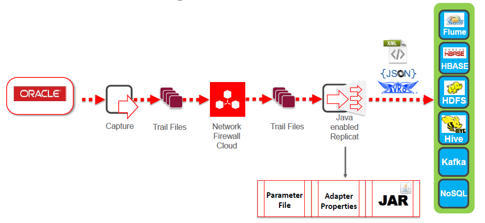
测试表¶
源端测试表：
在源端Oracle的PDBORCL数据库的test用户下创建test1表，其中ID为主键

OGG for Oracle安装¶
前置条件：完成oracle12c数据库的安装（IP：162.1.115.68）
软件版本：linuxamd64_12102_database_1of2.zip, linuxamd64_12102_database_1of2.zip
下载并安装OGG for Oracle¶
- 将fbo_ggs_Linux_x64_shiphome.zip上传至oracle客户端（ip：162.1.115.68）
/home/oracle目录下，切换至oracle用户，解压生成bo_ggs_Linux_x64_shiphome目录。

- 在
/home/oracle/fbo_ggs_Linux_x64_shiphome/Disk1目录下，运行./runInstaller
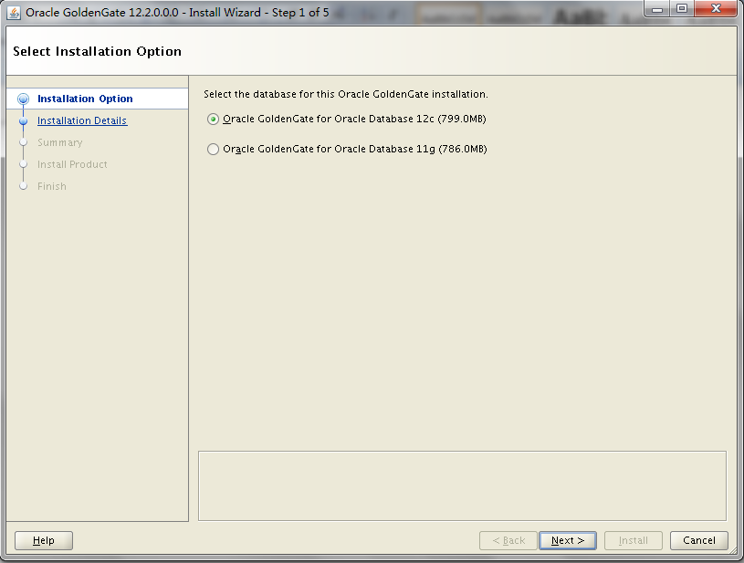


- 安装成功，/home/orcle/OGG/是OGG for Oracle的安装目录。

配置环境变量¶
- 切换到oracle用户
su - oracle vi .bash_profile
- 文件.bash_profile内容如下： ```shell # .bash_profile # Get the aliases and functions if [ -f ~/.bashrc ]; then . ~/.bashrc fi
# User specific environment and startup programs
PATH=PATH:HOME/bin
export PATH
PATH=PATH:HOME/bin:/u01/app/oracle/product/12.1.0/db_1/bin export PATH umask 022 export ORACLE_BASE=/u01/app/oracle export ORACLE_HOME=/u01/app/oracle/product/12.1.0/db_1 export ORACLE_SID=orcl
export LD_LIBRARY_PATH=$ORACLE_HOME/lib ```

- 运行OGG

打开数据库归档及开启最小附加日志¶
- 使用Sqlplus / as sysdba登陆Oracle源端数据库后打开Archive Log:
shutdown immediate; startup mount; alter database archivelog; alter database open; archive log list;

-
源端数据库打开数据库级最小附加日志及force logging：
SELECT supplemental_log_data_min, force_logging FROM v$database; alter database add supplemental log data; alter database force logging;
-
切换日志以使附加日志生效：
ALTER SYSTEM switch logfile;
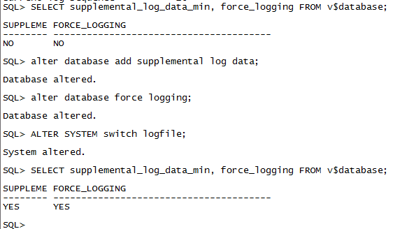
- Enabling Oracle GoldenGate in the Database:
show parameter enable_goldengate_replication; alter system set enable_goldengate_replication = true scope=both;

- 配置DB12c PDB的tnsname信息
vi $ORACLE_HOME/network/admin/tnsnames.ora：
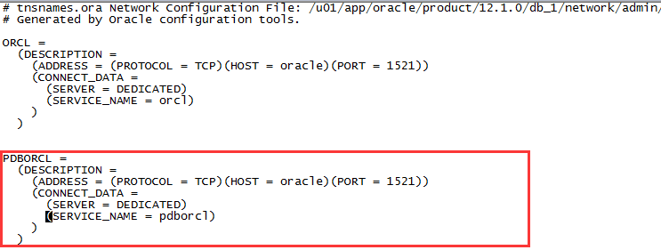
在数据库中创建ogg用户并赋予权限¶
- 使用
sqlplus / as sysdba登陆数据库后创建ogg用户并赋予权限create user c##ogg identified by welcome1; grant dba to c##ogg container=all; grant create session, connect, resource to c##ogg container=all; grant alter any table to c##ogg container=all; grant alter system to c##ogg container=all; exec dbms_goldengate_auth.grant_admin_privilege('c##ogg',container=>'all');

配置GoldenGate 登陆数据库的别名¶
-
在GoldenGate中创建用户别名，用于登录Oracle数据库读取数据库日志：
add credentialstore ALTER CREDENTIALSTORE ADD USER c##ogg PASSWORD welcome1 ALIAS ogg_src
-
这样就可以用别名ogg_src登陆数据库了：
dblogin useridalias ogg_src

- C##ogg是Oracle DB12c的普通用户，可以访问多个数据库实例。
创建test用户和test1表¶
test用户是基于pdborcl数据库实例的：
-
登陆数据库
Sqlplus / as sysdba
-
创建用户
alter session set container=pdborcl; alter database open; create user test identified by welcome1; grant resource, connect to test; CREATE TABLESPACE test DATAFILE '/u01/app/oracle/oradata/orcl/pdborcl/test01.dbf' SIZE 500M UNIFORM SIZE 128k; alter user test quota unlimited on test; alter user test quota unlimited on users;
-
创建测试表
conn test/welcome1@pdborcl; create table test1(id number primary key, name varchar2(50));


配置GoldenGate捕获进程¶
- 编辑eora.prm，在GGSCI命令行下运行edit param eora命令：
GGSCI> edit param eora

GGSCI> edit param mgr

GGSCI> edit param phdfs
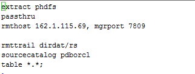
GGSCI> edit param phbase

GGSCI> edit param pkafka

GGSCI> edit param pflume

-
编辑
diroby/eora.oby文件，在GGSCI命令行下运行shell vi diroby/eora.oby命令：(shell之后接操作系统命令) -
使用oracle用户创建diroby目录：
cd /home/oracle/OGG/ mkdir diroby
GGSCI> shell vi diroby/eora.oby

注意进程名eora和数据文件dirdat/eo的对应关系
- 在GGSCI命令行下运行obey diroby/eora.oby命令，把捕获进程eora加入到管理者进程中：
GGSCI> obey diroby/eora.oby

- 把捕获进程eora注册到pdborcl数据库中：
GGSCI> dblogin useridalias ogg_src GGSCI> register extract eora database container(pdborcl)
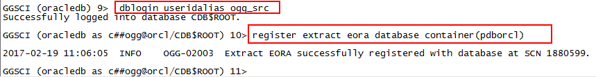
- 为pdborcl.test下的所有表添加表级附加日志：
GGSCI> add schematrandata pdborcl.test allcols

- 启动GoldenGate捕获进程eora:
GGSCI> start eora

配置GoldenGate传输进程phdfs¶
配置GoldenGate传输进程phdfs，将OGG生成的数据文件传递给目标端GoldenGate HDFS处理。
- 编辑phdfs.prm，在GGSCI命令行下运行
edit param phdfs命令：
- 编辑
diroby/phdfs.oby文件，在GGSCI命令行下运行shell vi diroby/phdfs.oby命令：(shell之后接操作系统命令)
GGSCI> shell vi diroby/phdfs.oby
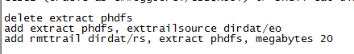
注意进程名**phdfs**和数据文件dirdat/rs的对应关系
- 在GGSCI命令行下运行
obey diroby/phdfs.oby命令，把捕获进程phdfs加入到管理者进程中：
GGSCI> obey diroby/phdfs.oby

- 启动GoldenGate捕获进程phdfs:
GGSCI> start phdfs

配置GoldenGate传输进程phbase¶
配置GoldenGate传输进程phbase，将OGG生成的数据文件传递给目标端GoldenGate HBASE处理。
- 编辑phbase.prm，在GGSCI命令行下运行
edit param phbase命令：
编辑diroby/phbase.oby文件，在GGSCI命令行下运行shell vi diroby/phbase.oby命令：(shell之后接操作系统命令)
GGSCI> shell vi diroby/phbase.oby

注意进程名**phbase**和数据文件dirdat/se的对应关系
- 在GGSCI命令行下运行
obey diroby/phbase.oby命令，把捕获进程phbase加入到管理者进程中：
GGSCI> obey diroby/phbase.oby
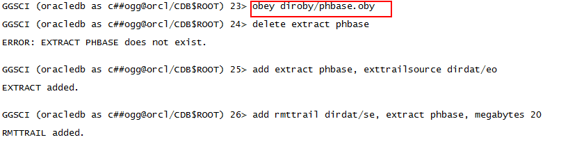
- 启动GoldenGate捕获进程phbase:
GGSCI> start phbase
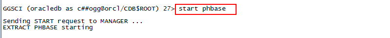
配置GoldenGate传输进程pflume¶
配置GoldenGate传输进程pflume，将OGG生成的数据文件传递给目标端GoldenGate FLUME处理。
- 编辑pflume.prm，在GGSCI命令行下运行
edit param pflume命令：
- 编辑
diroby/pflume.oby文件，在GGSCI命令行下运行shell vi diroby/pflume.oby命令：(shell之后接操作系统命令)
GGSCI> shell vi diroby/pflume.oby

注意进程名**pflume**和数据文件dirdat/rf的对应关系
- 在GGSCI命令行下运行
obey diroby/pflume.oby命令，把捕获进程pflume加入到管理者进程中：
GGSCI> obey diroby/pflume.oby

- 启动GoldenGate捕获进程pflume:
GGSCI> start pflume

配置GoldenGate传输进程pkafka¶
配置GoldenGate传输进程pkafka，将OGG生成的数据文件传递给目标端GoldenGate Kafka处理。
- 编辑pkafka.prm，在GGSCI命令行下运行
edit param pkafka命令：
- 编辑
diroby/pkafka.oby文件，在GGSCI命令行下运行shell vi diroby/pkafka.oby命令：(shell之后接操作系统命令)
GGSCI> shell vi diroby/pkafka.oby

注意进程名**pkafka**和数据文件dirdat/rk的对应关系
- 在GGSCI命令行下运行
obey diroby/pkafka.oby命令，把捕获进程pkafka加入到管理者进程中：
GGSCI> obey diroby/ pkafka.oby

- 启动GoldenGate捕获进程pkafka:
GGSCI> start pkafka

查看GoldenGate进程运行状态¶
- 查看GoldenGate进程状态：(EORCL是与ELK对接的进程)
GGSCI> info all

- 查看某个进程的详细信息：
GGSCI> info eora detail

- 查看GoldenGate的统计信息：
GGSCI> stats eora, latest

- 查看GoldenGate进程报告，用于定位问题：
GGSCI> view report eora

OGG for Bigdata安装¶
环境准备¶
-
下载安装FusionInsight客户端
-
在Bigdata客户端机器上（ip：162.1.115.69）按照FusionInsight产品文档安装FusionInsight客户端。将客户端JDK替换成1.7版本。
-
下载并安装oracle JDK1.7

将krb5.conf放在/etc/目录下
- 下载并安装OGG for Bigdata
将122011_ggs_Adapters_Linux_x64.zip上传至客户端/opt目录下：
unzip 122011_ggs_Adapters_Linux_x64.zip

将解压后的ggs_Adapters_Linux_x64.tar解压到/opt/OGG_HADOOP目录下：

- 配置环境变量
更改环境变量，编辑根目录下vi .bash_profile
# .bash_profile # Get the aliases and functions if [ -f ~/.bashrc ]; then . ~/.bashrc fi # User specific environment and startup programs export JAVA_HOME=/usr/java/jdk1.7.0_40 #export JAVA_HOME=/usr/lib/jvm/java-1.7.0-openjdk-1.7.0.9.x86_64/jre export CLASSPATH=$CLASSPATH:$JAVA_HOME/lib:$JAVA_HOME/jre/lib PATH=$JAVA_HOME/bin:$PATH:$HOME/bin export PATH #export LD_LIBRARY_PATH=/usr/lib/jvm/java-1.7.0-openjdk-1.7.0.9.x86_64/jre/lib/amd64/server/libjvm.so:/usr/lib/jvm/java-1.7.0-openjdk-1.7.0.9.x86_64/jre/lib/amd64/server:/usr/lib/jvm/java-1.7.0-openjdk-1.7.0.9.x86_64/jre/lib/amd64/libjsig.so:/root/OGG_PostgreSQL/lib:$LD_LIBRARY_PATH export LD_LIBRARY_PATH=/usr/java/jdk1.7.0_40/jre/lib/amd64/server/libjvm.so:/usr/java/jdk1.7.0_40/jre/lib/amd64/server:/usr/java/jdk1.7.0_40/jre/lib/amd64/libjsig.so:/root/OGG_PostgreSQL/lib:$LD_LIBRARY_PATH export LD_LIBRARY_PATH=/usr/local/lib:$LD_LIBRARY_PATH


Source环境变量，source .bash_profile.

将/opt/OGG_HADOOP/AdapterExamples/big-data下的四个目录下的所有文件拷贝到/opt/OGG_HADOOP/dirprm目录下。
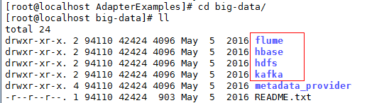

配置GoldenGate管理进程¶
- 编辑mgr.prm
GGSCI> edit param mgr

GGSCI>start mgr GGSCI>info all

配置GoldenGate HDFS 复制进程¶
- 编辑rhdfs.prm，在GGSCI命令行下运行
edit param rhdfs命令：
GGSCI> edit param rhdfs

- 编辑hdfs.props, 在GGSCI命令行下运行
shell vi dirprm/hdfs.props命令：(shell之后接操作系统命令)
GGSCI> shell vi dirprm/hdfs.props

-
需要在HDFS中创建/ogg1目录。
-
将hdfs.keytab文件拷贝到/opt/OGG_HADOOP/dirprm目录中：
- 把GoldenGate复制进程rhdfs加入到GoldenGate管理者进程中：
GGSCI> add replicat rhdfs, exttrail dirdat/rs

GGSCI>info all
GGSCI>start rhdfs GGSCI>info all

配置GoldenGate HBase 复制进程¶
- 编辑rhbase.prm，在GGSCI命令行下运行
edit param rhbase命令：
GGSCI> edit param rhbase

- 编辑hbase.props, 在GGSCI命令行下运行
shell vi dirprm/hbase.props命令：(shell之后接操作系统命令)
GGSCI> shell vi dirprm/hbase.props

- 拷贝hbase.keytab和jaas.conf到
/opt/OGG_HADOOP/dirprm/下：

- jaas.conf 文件

- 把GoldenGate复制进程rhbase加入到GoldenGate管理者进程中：
GGSCI> add replicat rhbase, exttrail dirdat/se

GGSCI>start rhbase

GGSCI>info all

配置GoldenGate Kafka 复制进程¶
- 创建kafka消息，进入FusionInsight客户端
/opt/hadoopclient/Kafka/kafka/bin

Kafka创建消息：
./kafka-topics.sh --create --zookeeper 162.1.93.101:24002,162.1.93.102:24002,162.1.93.103:24002/kafka --replication-factor 1 --partitions 1 --topic test

Kafka查看消息：
./kafka-topics.sh --list --zookeeper 162.1.93.101:24002,162.1.93.102:24002,162.1.93.103:24002/kafka --topic test

Kafka给消息授权：
./kafka-acls.sh --authorizer-properties zookeeper.connect=162.1.93.101:24002,162.1.93.102:24002,162.1.93.103:24002/kafka --add --operation All --allow-principal User:* --cluster --topic test

- 编辑rkafka.prm，在GGSCI命令行下运行
edit param rkafka命令：
GGSCI> edit param rkafka

- 编辑kafka.props, 在GGSCI命令行下运行
shell vi dirprm/kafka.props命令：(shell之后接操作系统命令)
GGSCI> shell vi dirprm/kafka.props
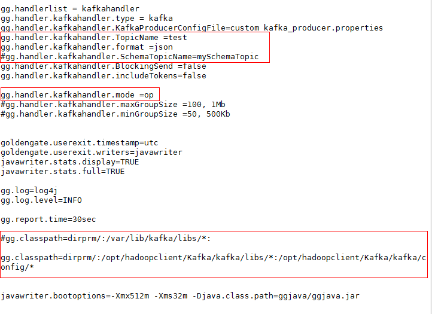
- 其中 gg.handler.kafkahandler.BlockingSend 属性控制同步和异步，默认false，异步。
GGSCI> shell vi dirprm/custom_kafka_producer.properties
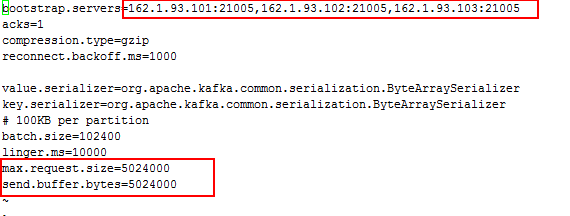
- 修改Kafka里的配置，将如下选项修改为True


- 把GoldenGate复制进程rkafka加入到GoldenGate管理者进程中：
GGSCI> add replicat rkafka, exttrail dirdat/rk

GGSCI>start rkafka

GGSCI>info all

配置GoldenGate Flume 复制进程¶
- 安装Flume客户端，配置非加密传输


- 配置Server的配置文件properties.properties
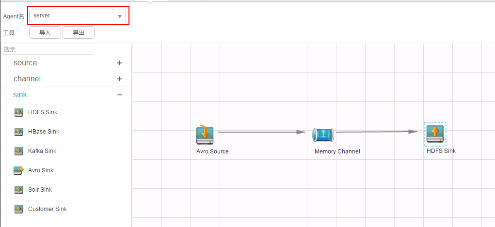
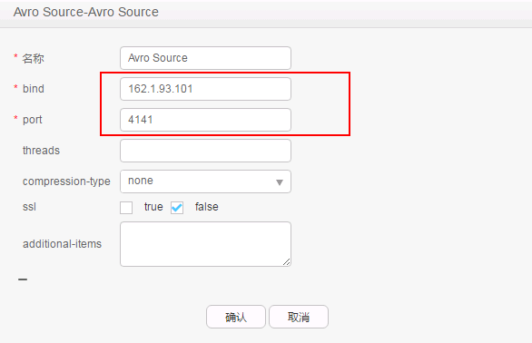
- 导出的properties.properties文件，增加如下配置：

-
可以在HDFS中增加/ogg/flume目录
-
将此properties.properties文件上传至FusionInsight。

- 编辑rflume.prm，在GGSCI命令行下运行
edit param rflume命令：
GGSCI> edit param rflume

- 编辑flume.props, 在GGSCI命令行下运行
shell vi dirprm/flume.props命令：(shell之后接操作系统命令)
GGSCI> shell vi dirprm/flume.props

gg.handler.flumehandler.PropagateSchema=false 控制DDL
gg.handler.flumehandler.format.WrapMessageInGenericAvroMessage=false 相同SCHAME打包
GGSCI> shell vi dirprm/custom-flume-rpc.properties

- 拷贝flume.keytab文件到
/opt/OGG_HADOOP/dirprm/目录下

- 把GoldenGate复制进程rflume加入到GoldenGate管理者进程中：
GGSCI> add replicat rflume, exttrail dirdat/rf

GGSCI>start rflume

GGSCI>info all

测试结果¶
Oracle端启动所有的传输进程¶
- 确保所有传输进程均已经正常启动

在Oracle数据库源端做Insert操作¶
su – oracle
source .bash_profile
sqlplus test/welcome1@pdborcl


- 查看HDFS同步情况，
hadoop fs –ls /ogg1
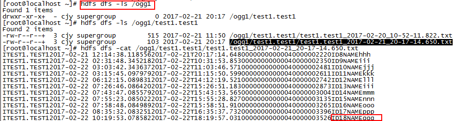
- 查看HBase同步情况
hbase shell

- 查看kafka结果，进入kafka客户端
/opt/hadoopclient/Kafka/kafka/bin
执行以下命令：
./kafka-console-consumer.sh --zookeeper 162.1.93.101:24002,162.1.93.102:24002,162.1.93.103:24002/kafka --topic test --from-beginning

- 在HDFS中查看flume运行结果：查看/ogg/flume/下数据文件：

在Oracle数据库源端做Update操作¶
- 执行以下命令
su – oracle source .bash_profile sqlplus test/welcome1@pdborcl


- 查看HDFS同步情况，
hadoop fs –ls /ogg1

- 查看HBase同步情况
hbase shell

- 查看kafka结果，进入kafka客户端
/opt/hadoopclient/Kafka/kafka/bin
执行以下命令：
./kafka-console-consumer.sh --zookeeper 162.1.93.101:24002,162.1.93.102:24002,162.1.93.103:24002/kafka --topic test --from-beginning
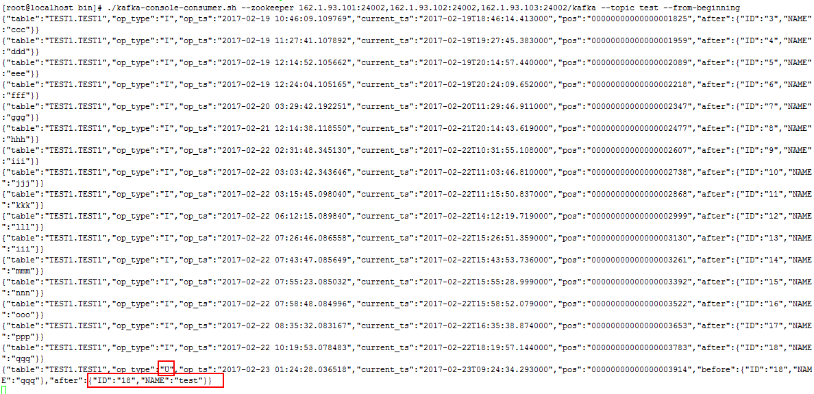
- 在HDFS中查看flume运行结果：查看/ogg/flume/下数据文件：

在Oracle数据库源端做Delete操作¶
- 执行以下命令
su – oracle source .bash_profile sqlplus test/welcome1@pdborcl

- 查看HDFS同步情况，hadoop fs –ls /ogg1

- 查看HBase同步情况
hbase shell

- 查看kafka结果，进入kafka客户端
/opt/hadoopclient/Kafka/kafka/bin
执行以下命令：
./kafka-console-consumer.sh --zookeeper 162.1.93.101:24002,162.1.93.102:24002,162.1.93.103:24002/kafka --topic test --from-beginning

- 在HDFS中查看flume运行结果：查看/ogg/flume/下数据文件：